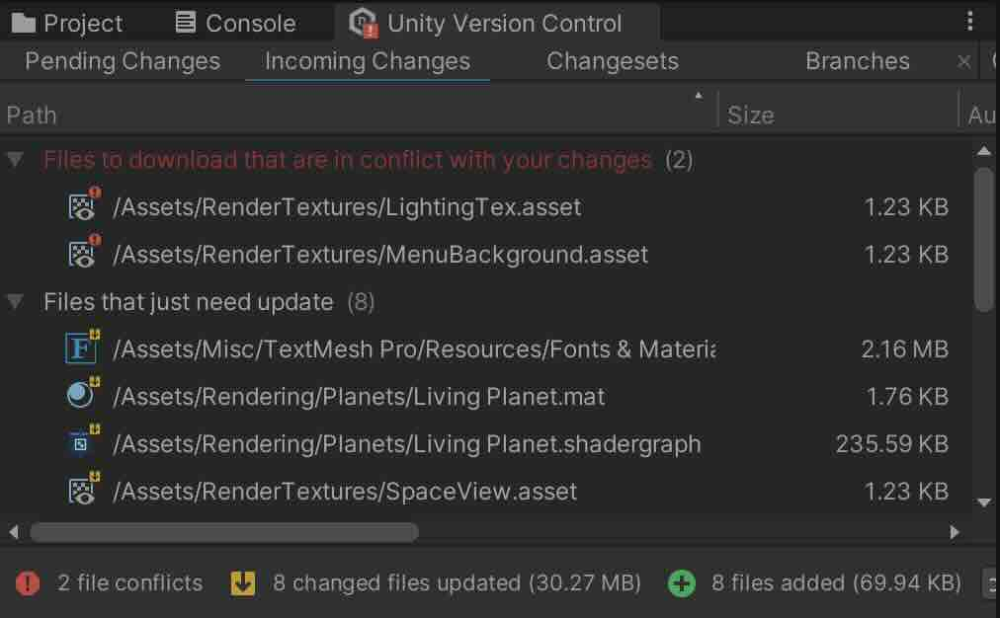
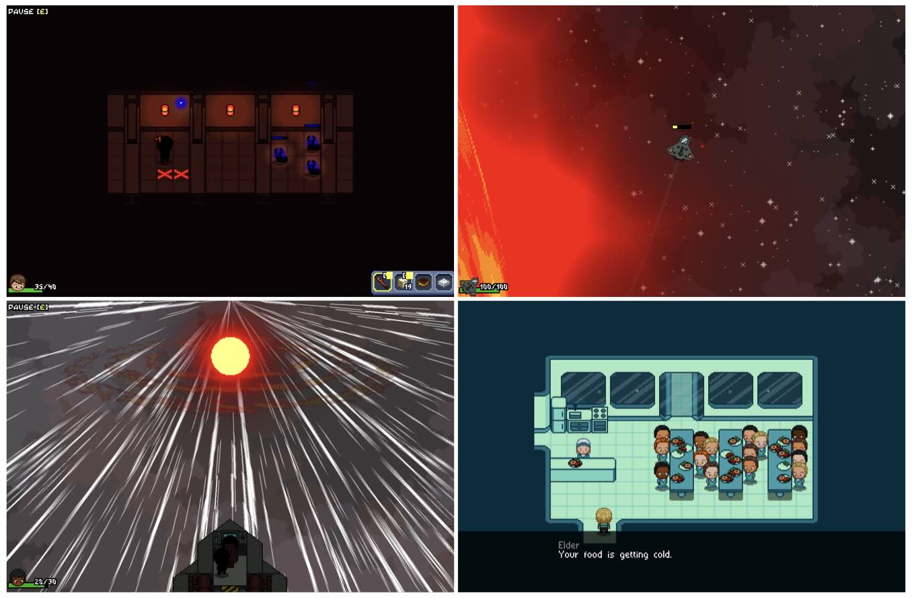

A long-term collaborative project building a sci-fi space adventure game in Unity. It features space travel, enemy encounters, planetary exploration and a custom soundtrack.

Development involves a collaborative board where ideas are presented and discussed, and Unity Version Control is used to manage changes and conflicts.
The game is actively developed, with regular updates and new content planned.
My contributions have included feature development, bug fixing, ongoing collaborative planning and the custom soundtrack.